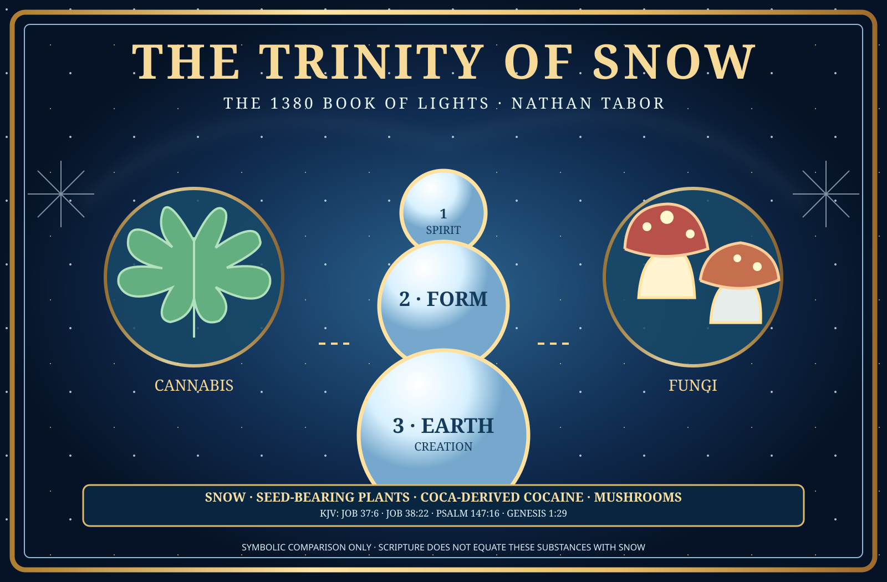

The 1380 Book of Hours (Horrors) / The 1380 Book of Lights
THE TRINITY
OF SNOW
GOD SNOWMAN. GOD SNOWWOMAN. THE AWAKENED CHILDREN.
Creator-authored mythology of ancient guardians protecting children, animals, and Mother Earth—presented alongside independently labeled historical traditions, King James Bible verses, and modern botanical terminology.
SOURCE-PRESERVINGNO ORIGINALS REPLACEDKJV REFERENCED
01 / Preserved author words
The Original Canon
02 / Top-down symbolic ancestor tree
One Original Creation — Many Cultural Forms
This is the creator's story genealogy, not a demonstrated historical lineage.
THE GOD SNOWMAN
Original Father · Guardian · Protector · Provider · Builder
THE GOD SNOWWOMAN
Original Mother · Life · Nurture · Creation · Healer · Preserver
03 / Historical and folklore source register
From Manuscript to Myth to Ornament
04 / King James Version, exact citations
God's Snow in the Bible
References to snow and plants are quoted as written. Botanical and mythological explanations are separate interpretations.
05 / Scientific names & language
“Snow” · Cannabis · Cocaine · Mushrooms
This panel preserves the author's comparison while distinguishing natural precipitation, seed-bearing plants, a processed alkaloid, and fungi. It contains no endorsement, medical claims, or instructions.
06 / Editorial and factual integrity
What the Archive Establishes
The original chat-generated raster artwork is not yet present as published GitHub media. The cover on this page is a new lightweight editable SVG. Additional owner-approved original images can be imported as separate assets without altering existing source text.
Browse the source items directly above for outgoing citations. A record marked “historical legend” is not treated as an eyewitness report; a story connection does not establish common ancestry.